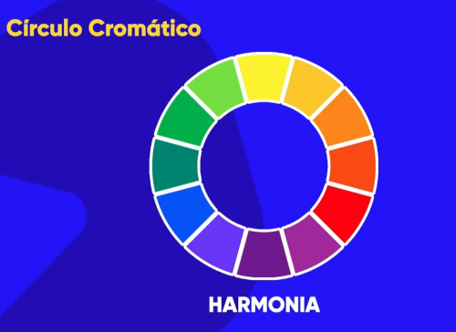
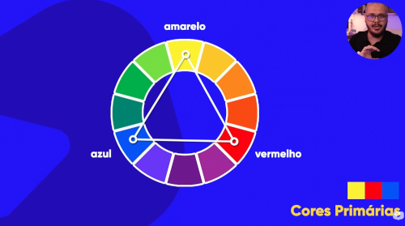
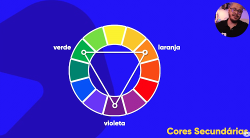
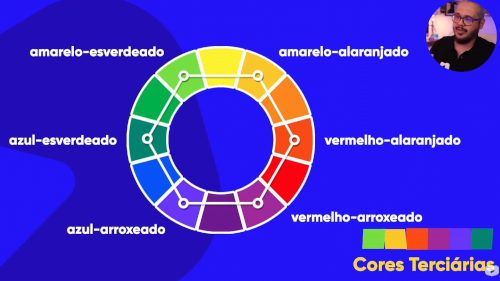
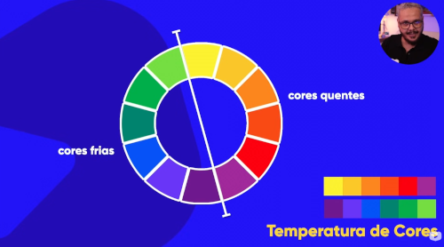
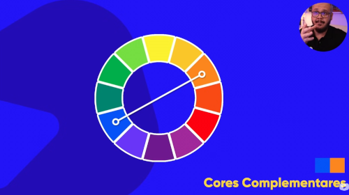
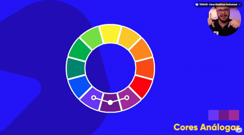
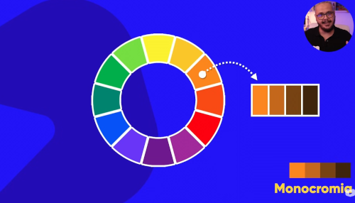

Simetria e equilíbrio são essenciais para um design de alta qualidade.


Resultam da mistura de uma cor primária com uma cor secundária.


Cores opostas no círculo cromático. Use para criar alto contraste e destaque.

Cores que estão lado a lado no círculo cromático, gerando suavidade.

Variações da mesma cor, alterando apenas a saturação e o brilho.

Quick Tips:
1. Sempre pesquise sobre Psicologia das Cores antes de definir sua paleta.
2. Tente trabalhar com uma paleta de 3 a 5 cores para manter a limpeza visual.
3. Use a cor principal da logo do seu cliente como base para o site.